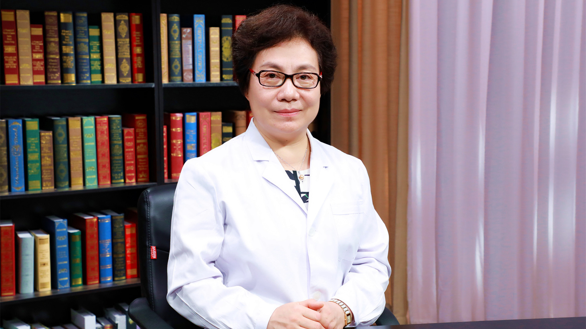

1.2 剖宫产后再生育注意事项#
刘欣燕 主任医师#

北京协和医院妇产科学系产科中心副主任 妇科计划生育专业组组长 主任医师 博士生导师；
中华医学会计划生育学分会候任主任委员；妇幼健康研究会生育调控学专业委员会主任委员；北京医学会计划生育分会主任委员；中华医学会科学普及分会委员；全国卫生产业企业管理协会健康服务适宜技术分会副会长。
主要成就： 国内外发表论文 50 余篇，SCI 论文 10 余篇；致力于生殖健康和计划生育的基础和临床研究，获得省部级项目 15 项。
专业特长： 擅长避孕节育、早中孕期妊娠合并症及并发症的处理；擅长剖宫产瘢痕妊娠的诊断、治疗和处理；在胎盘植入和习惯性流产等方面经验丰富。
剖宫产后再生育会有什么危险？#
（采访）剖宫产后再生育会有哪些风险呢？
所谓剖宫产后，跟没有做剖宫产的妇女最大的区别是子宫下段前壁有一个切口，做剖宫产时把切口缝上以后，刀口愈合以后会形成一个瘢痕，剖宫产有了一道疤，实际上就是这个区别。
这样的妇女再次怀孕的时候，面临的最大风险，就是再次怀孕的胚胎种到疤上，所谓的剖宫产瘢痕妊娠，这就是她面临的最大风险。
（采访）剖宫产的瘢痕妊娠会有什么样的危害吗？
是这样的，胚胎种到剖宫产这个疤上以后，会继续向深处生长，胚胎肯定是要长大的，在长大的过程中，会引起出血，会引起子宫破裂，会引起孕产妇大出血，甚至面临生命的危险。
剖宫产后多久可以再怀孕？#
（采访）建议剖宫产后多久可以再次怀孕？
剖宫产后再怀孕的时间，是根据瘢痕愈合的情况。
如果是剖宫产后特别近的时间就怀孕，我们见过有的半年，可能就怀孕了，瘢痕还没有长得非常好。这样即使胚胎着床的位置很正常，种在宫腔里面了，但因为疤这个地方没有长特别好，可能会造成继续怀孕的时候，子宫这个疤自发的就会破裂。
如果是剖宫产后很近期就怀孕了，也会对胎儿有一些影响，可能胎儿发生早产或者宫内生长不好的情况会更多一些。大数据分析下来就是，剖宫产以后两年再怀孕，这样是比较好的时间。
当然你说三年行不行？五年行不行？
两年以后再怀孕就都没有问题了。
（采访）不是说剖宫产后隔得时间越长越好，其实两年以上就没有什么问题，没什么区别？
对，两年以上就没有什么问题，前提是这个胚胎是种在正常的位置。
如果说胚胎没有种到正常的位置，种在瘢痕这个地方，就是只要你有剖宫产史，不管过多少年，再次怀孕的时候都会面临胚胎种在瘢痕上这么一种风险。剖宫产瘢痕妊娠，跟剖宫产后多长时间怀孕是没有关系的，可能两年怀孕也会发生，20年怀孕也会发生，所以有剖宫产史的妇女,再次怀孕以后,面临的最大的风险就是剖宫产瘢痕妊娠，要时刻警惕这件事情。
（采访）如果女性在剖宫产后一年就怀孕了，那这个宝宝还能要吗？
一年就怀孕了，时间确实是比较短。在临床看到就是最短最短的时间，觉得影响不是特别大的情况，是两个孩子的出生时间,间隔两年，也就是可能刚做完剖宫产一年多一点时间就怀上孕了。
如果说剖宫产以后一年或者半年就怀孕，这个孩子能不能要？
当然如果这孩子非常宝贝，或者说你本来就非常希望要这个孩子，就要加强监测，各方面的预防措施都要做得非常好，要严格的围产保健，时刻警惕着子宫下段会不会变得特别薄，会不会自发破裂。所以如果时间特别短就怀上的妇女,一定要跟医生密切联系，好好的做围产保健。
剖宫产后怎么预防瘢痕妊娠？#
（采访）有没有哪些办法可以预防剖宫产后瘢痕妊娠？
北京协和医院报的瘢痕妊娠是全国首例报的，那个时候是1994年，第一次发现瘢痕妊娠，剖宫产瘢痕妊娠从北京协和医院报道中国第一例以来，已经是20多年都过去了，在这个过程中努力的去找，什么方法可以预防剖宫产瘢痕妊娠？但是没有找到。
所以现在唯一可以做的第一件事情就是，如果我有剖宫产史，后面不想再怀孕，或者要间隔一段时间怀孕，要做的第一件事就是要严格的避孕，认真的避孕。
等想怀孕的时候要做的第一件事就是，一旦发现怀孕了，赶紧到医院去做B超，看胚胎种在什么地方。如果种在宫底非常好的地方，继续怀孕没有问题，如果是种在瘢痕上面或者离的瘢痕很近的情况下，一定要赶紧找大夫去评估。
真正的预防办法比方吃什么药，或者用什么办法就可以预防，目前还没有发现，以后或许会发现，那将是广大患者的福音。
什么是剖宫产切口憩室？影响再次怀孕吗？#
（采访）如果剖宫产的女性发生了剖宫产憩室，会不会影响再怀孕？
剖宫产憩室是这样的，因为子宫前壁不是切了一个口子嘛，切完以后咱们把它缝上，缝上以后，愈合以后，那个地方就会有一点凹陷，就和正常原来的形态不一样。凹陷如果小，没有什么问题，有的愈合特别差，当然是跟孕产妇本身的体质有关系，个体差异非常大。有的会形成一个比较大的凹陷，管凹陷叫剖宫产瘢痕憩室。只要做过剖宫产的人，或多或少都会有剖宫产瘢痕憩室。有的特别小就可以忽略，基本上是平的；有的比较大，甚至有的整个是一个非常大的裂口，那种叫剖宫产瘢痕憩室。
剖宫产瘢痕憩室对妇女造成的影响最大的是，来完月经以后血老不干净，有点沥沥拉拉的不干净，因为有些血是存在憩室里面的，流出来的比较慢。真正说再次怀孕的时候，剖宫产瘢痕憩室有什么影响，其实影响不是特别大。关键问题还是胚胎种在什么地方，只要没种在这个疤这，有一个剖宫产瘢痕憩室，或者有人甚至两个地方有憩室，大点小点问题都不是特别大。
但是那种瘢痕憩室特别大，几乎整个基层全层都几乎裂开，只有一点点连着的那一种，再次怀孕的时候，要警惕（子宫）下段再怀孕，到晚期会不会破裂。所以在做围产保健的时候，医生会提醒她什么时候去做B超看一看，前壁是不是变得非常薄了。所以这种情况要注意，一般的情况下，剖宫产瘢痕憩室是不影响再次怀孕的。
（采访）如果是比较严重比较大的憩室，能不能说先把它修复完了，再怀孕呢？
是这样的，因为这个疤长的形态，是个体差异非常大。有些人可能是因为第一次剖宫产，比方急诊剖宫产或者伤口有些感染，长了一个非常大的疤，这种情况下如果有月经沥沥拉拉不干净，要改善这个症状，可以去修复这个憩室。第二次给她再把边缘修一修，再缝合上。但是缝合以后或许瘢痕会长得比以前好，或许还不如以前，因为毕竟是第二次的切口，所以修憩室主要是为了减少月经的症状，不是为了预防瘢痕妊娠，也预防不了瘢痕妊娠。有些人做了憩室修补以后非常好，月经血不这么沥沥拉拉不干净了，那是非常好的结果。有些人修完以后，憩室还没有上次长的好的情况也是有的。所以修憩室的手术指征不是为了预防瘢痕妊娠，再次强调不是为了预防瘢痕妊娠，是为了减少在日常生活当中的一些症状。
（采访）瘢痕憩室不会影响她再怀孕，是不是也是跟剖宫产一样，两年之后就可以怀孕了？
做过剖宫产的人都会有憩室，所以肯定不可能每个人都去修这个憩室。而且憩室修得再好，也不能预防瘢痕妊娠。从这个角度来说，有瘢痕憩室也不用特别的担心。最需要关心的下次怀孕的时候，胚胎种在什么地方？是你需要关心的事情。
做过剖宫产手术，再次怀孕前后，要特别注意什么？#
（采访）剖宫产后再生育，在孕前需要做哪些准备呢？
是这样的，剖宫产以后，比方过了两年了有生育要求，首先和所有的孕前妇女一样去做一个孕前的体检，这个大家都知道。
如果是剖宫产史的妇女，做B超的时候要跟B超大夫提示一下，做过剖宫产，看一下瘢痕愈合的情况。如果愈合的特别差，在怀孕的时候就要给予高度的重视，看会不会在怀孕的中晚期，发生自发的破裂，其他的就没有什么太特殊的。
不是说我做过剖宫产，在孕前检查就要多做很多化验什么的，不用的，
（采访）剖宫产后的女性如果再怀孕了，在孕期当中需要注意些什么呢？
唯一的还是要反复强调，怀孕以后早早的去看胚胎种在什么地方，这是最重要的。
（采访）建议怀孕一般多久之后就做个B超，看看种在什么地方？
一般如果月经周期规律，比方说三十天来一次的这些妇女，在停经以后，大概过个五六天，也就是停经三十五六天的时候，做阴道B超就能看到胚胎种到什么地方。如果说做腹部B超，大概四十一二天应该也能看到胚胎种在什么地方，所以我建议大家，在六周左右就要尽早的到医院去做B超，当然所有的妇女停经以后都要尽早的做B超，因为不光要警惕剖宫产瘢痕妊娠，还要警惕宫外孕，输卵管妊娠。
有剖宫产史的妇女，再次怀孕以后，都要时刻警惕胎盘的位置，因为随着孕周增加，胎盘有可能变成一个前置胎盘，也可能盖过瘢痕的地方，在瘢痕的地方又会发生新的植入，所以这些情况都要给予警惕。当然做围产保健的医生，现在在这方面的知识也是越来越多，也都会关注这个情况。
（采访）剖宫产后再怀孕的女性，是不是要比普通的孕妇更频繁的去医院做检查？
那是当然的，剖宫产史的妇女再怀孕，是属于高危孕妇里面的，高危的孕妇做围产保健的时间是比普通孕妇多的。所以在刚刚一怀孕建档的时候，医生就把你归到高危孕妇里了。所以除了你自己比较关心这件事情，医生也会非常关心。
怀孕早期看好了胚胎种的位置是好的，就进到围产保健，到中期，到晚期，每次做B超，超声大夫都会关注你胎盘的位置。你自己要关注就是在整个怀孕过程中，有没有突然的下腹部疼痛？就是在耻骨联合上面，原来剖宫产瘢痕的地方有没有疼痛，如果觉得有疼痛或者手压上去有疼痛，要尽早的到医院去或许就提示是不是瘢痕那个地方太薄了，是不是有先兆破裂的情况。
（采访）围产保健一般建议多长时间做一次B超？
围产保健正常的情况，就是所有的孕产妇在怀孕早期做一个B超，然后12周有B超，20周左右有B超，28周、37周都是常规的B超。大概整个孕期是有4次的B超。
但是对有剖宫产史的妇女，如果情况需要，或者医生有什么觉得需要警惕的地方，她的超声次数，会比一般的没有剖宫产史的孕妇要多。
剖宫产后再怀孕，可以避免子宫瘢痕破裂吗？#
（采访）剖宫产后再怀孕的女性，在怀孕期间有没有什么办法可以避免子宫瘢痕破裂？
没有办法，剖宫产史是有一个历史的渊源，大家知道，最开始做剖宫产时，口是竖着切的，就是子宫上的口是竖着切的，把孩子拿出来再缝上。后来大家发现这么竖着切的口，再次怀孕的时候，子宫破裂的机会比较多，所以大家就改成一个下段横切口，就选择了一个子宫肌层最薄的地方，膀胱腹膜反折下面一点点，在那个地方做切口。
后来大家发现这个切口再次怀孕的时候，自发破裂的几率非常低，所以全世界都选用子宫下段横切口，这就是标准的剖宫产的这个术式。自从改成下段横切口以后，再次怀孕自发破裂的人确实很少，而且几率非常低。
怎么来预防破裂？现在其实没有办法，从上一次做剖宫产选切口的时候，选了下段横切口已经是一个预防措施了。再次怀孕的时候，当然建议最好不要怀双胞胎，少怀双胞胎，因为双胞胎对子宫的弹性要求非常高。再一个最好别让孩子长得特别大，所以怀孕期间控制一下你的体重，别让孩子长成一个超重儿，这样子宫的负担也会重，下段瘢痕拉长的程度也会非常大，当然破裂机会就多。
还有就是如果你有宫缩了，如果怀孕到孕晚期，开始有宫缩了，就赶紧到医院去，因为有剖宫产史的妇女，在宫缩的时候，如果宫口开得不是特别好，压力全在子宫下段那个地方，所以也增加了瘢痕破裂的机会。当然这样说，可能怀孕的孕产妇特别紧张，其实也不用。
因为在你每次做围产保健的时候，医生都会告诉你出现什么情况怎么办？这种自发破裂的情况，尤其在没有宫缩的情况下，自发破裂的情况非常少，所以大家不用特别担心。
但一旦到临产期，有宫缩的情况下，就时刻要警惕是不是有瘢痕破裂。
为什么要强调：剖宫产后再怀孕时一定要重视宫缩？#
宫腔大家可以把它想象成一个口袋，宫颈就是口袋的出口。在正常怀孕情况下，这出口是系死的，所以孩子在里面长多大，也不会从出口这个地方出来。
但是一旦临产以后，子宫要收缩，子宫收缩，口袋的出口会慢慢变得越来越松，最后出口完全打开，孩子就出来了。这种情况大家可以想象，如果再有宫缩的情况下，宫缩很紧，宫口没有张开，这个时候子宫壁要承受很大的压力。如果说宫口开的不好，宫缩又非常强，这个压力就会传导到子宫肌壁的每个部分。子宫下段因为切过一道口，长了一个瘢痕，这个地方的强度应该是弱的，所以就会往子宫壁上比较弱的这个地方去，压力都会压到那个地方。所以在宫缩情况下，如果宫口开的不好，宫缩又非常强，大家可以想象疤承受的压力很大，这个时候子宫破裂的机会是大大增加的。
因为大家怀孕有的是足月的分娩，有的可能因为各种情况，比方孩子的情况，大人的情况，需要做一些中期的引产，这个时候只要有宫缩，一定要警惕：宫口开得好不好？宫缩是不是特别强？会不会瘢痕那有破裂？所以这个时候是非常要紧的时候，当然这个时候一般情况下大家都住到医院去了，医生会给处理的，所以大家也不用那么担心。
（采访）所以剖宫产后再次怀孕的女性，如果一旦有宫缩了就赶紧去医院。
对，所谓宫缩就是因为正常怀孕，尤其怀孕到中晚期，肚子也会一阵一阵的硬，但是如果你这个肚子硬，还伴随着有肚子疼，或者是有下坠的感觉，或者说疼或者肚子变硬比较有规律，或者半个小时、四十分钟一阵，就要到医院去找医生看一下。
如果医生经过检查说没有问题，就是怀孕到中晚期的正常情况，你就回家静养几天，这个宫缩慢慢就没有了，但如果这宫缩越来越强，你又有剖宫产史，甭管怀孕多少周，不管怀孕到多少周数，都要赶紧去看急诊。
剖宫产后再怀孕，可以阴道分娩吗？#
（采访）剖宫产后再怀孕的女性，分娩的时候可以选择什么样的分娩方式呢？
现在因为二胎放开以后，大家都非常希望能阴道分娩，以后再生孩子就方便了。但如果第一次因为各种原因做了剖宫产的妇女，在下次选择分娩方式的时候，可能就要跟医生商量，不是说想阴道分娩就阴道分娩，想剖宫产就一定做剖宫产。但是在目前情况下，有些比较大的医院，还是第一次有剖宫产史的妇女，第二次还是要做选择性的剖宫产。除非是说这个病人非常想阴道分娩，也未尝不可。
有剖宫产史，再做阴道分娩也是一种分娩方式，但医生要评估，评估孩子的大小，评估宫颈的条件，是不是宫颈弹性非常好。然后再评估骨盆的情况，再参考上一次剖宫产的情况，来综合的评估，这次能不能阴道分娩。但是有剖宫产史的妇女做阴道分娩还是有一定风险的，就是自己要知道这个风险，什么风险？就是子宫破裂的风险。子宫破裂不像大家想象说子宫破裂，我住在医院破裂还能有什么大问题？
子宫破裂是妇产科的非常严重的一种情况，会造成母子双亡。发生的非常快，断的都是非常大的血管，可能在几分钟之内，几千毫升的血就出去了。如果不是说特别快几分钟你就能做上这个手术，把孩子拿出来，孩子会迅速的就会没有生命了。然后大人因为出了这么多的血，后面也会生命受到很大的威胁。所以子宫破裂是非常不愿意看到的情况。所以如果说做阴道分娩的时候，最大的担心就是子宫破裂，这样就需要非常严密的监测，随时来评估。如果生到一定情况说不可以再生了，再生子宫就会有破裂的风险，要及时的转成剖宫产。这个时候孕妇一定不要坚持自己，不听医生的一定要继续生，因为风险非常大。
所以剖宫产后再生育的方式，阴道分娩还没有达成共识，是不是都建议大家做阴道分娩都可以去试阴道分娩。最安全的方式，当然还是再次剖宫产。还有一种情况，上次剖宫产的时候，如果是因为骨盆过小，孩子生不出来，骨盆小做的剖宫产，以后每次分娩都只能选择剖宫产，因为你不可能阴道分娩。所以还要参考前一次剖宫产的指征综合给一个评估。即使这样在生的过程中，子宫破裂风险也会多，而且随时有可能改成剖宫产，要保证母子安全是我们最高的目标。
（采访）所以所有的孕妈妈都要听医生的，相信医生做出的判断，不要太坚持自己的想法，要保证母子平安。
其实医生也是希望母子平安高高兴兴的，所以谈不到什么，你坚持自己的想法，我这样说，不知道能不能理解，不是学医的人，你只能提出你的愿望，说如果我能阴道分娩，就觉得比较满意一些。谈不到说坚持要阴道分娩，因为你那个坚持是在没有一点医学背景，知识也不够的情况下，盲目的坚持，有的时候是非常愚昧的坚持，所以一定要听医生的。这种情况只能提出你的愿望，就好比说要把头发染成什么颜色，可以提这个愿望，但是这个不关乎到你的生命。如果说我一定要阴道分娩，那就是把生命放在一个比较危险的地方。如果医生说了，经过评估不适合阴道分娩，你还一定要阴道分娩，那就是把自己的生命放在一个比较危险的境地。所以我不建议大家这样，你可以提你的愿望，和医生商量，最终是阴道分娩还是剖宫产，就由医生决定，所有的医生都是希望自己的病人平安快乐的。
剖宫产后再怀孕能选择无痛分娩吗？安全吗？#
（采访）如果剖宫产后再怀孕的女性，她是可以选择阴道分娩的，那可不可以选择无痛？
无痛这件事情跟剖宫产是两回事儿，是这样。所有的阴道分娩都可以选择无痛，有没有剖宫产史都可以选择，剖一次的，剖八次的都可以选择，这个没有什么区别。所谓的无痛就是用一些麻醉的措施，让痛感消失。这个没有关系，阴道分娩都可以选用，有没有剖宫产史没有区别。
（采访）如果选择无痛分娩，安全吗？
无痛分娩现在是非常成熟的技术，而且也在推无痛分娩。现在有些医院做不了无痛分娩，不是因为无痛分娩不安全，是因为人手不够，所以无痛分娩是一个非常安全的分娩方式，所以不用担心这些事情。有些人担心无痛分娩是不是孩子就生不出来什么，这些情况，现在目前的科技进步的情况下，还有麻醉师水平的情况下，一点没有问题。不会影响宫缩，也不会造成孩子窒息，所以真的不用担心，无痛分娩现在很安全，也在大力提倡。
第二次剖宫产手术的同时可以做输卵管结扎吗？#
（采访）如果孕妈妈进行了二次的剖宫产，是不是要同时把输卵管进行结扎？
为什么？为什么要结扎？
（采访）防止第三次怀孕。
现在是这样做第二次剖宫产和输卵管结扎完全是两件事情。如果我生完第二个孩子，不想再生第三个了，也不想再怀孕了，又没有别的避孕措施可选，希望做输卵管结扎。所谓的输卵管结扎就是做了女性绝育术，做女性绝育术的前提就是不想再生孩子了，也没有别的避孕措施可用。如果你希望做是可以做的，这是两件事。但是医生不会说，因为你做二次剖宫产，就建议做输卵管结扎，不会的，这是两件事情。而且如果只是做第二次剖宫产，就说明你的第二个孩子刚刚生出来非常小，我觉得做输卵管结扎可能这个也有点早。因为毕竟这种绝育术以后想再怀孕还是比较困难的，要把输卵管再接上。而且现在有好多的避孕措施，可以达到和输卵管结扎一样的效果，也不需要做这个手术，所以不是必须的。而且比方第一个孩子甭管多大，第二个孩子毕竟才这么小，做输卵管结扎，也希望两个孩子生命什么都比较有保障以后才做这种绝育手术，不提倡，但如果说你有这个要求要做，可以帮你。
做过两次剖宫产手术，还可以再做第三次吗？#
（采访）如果进行过两次剖宫产，第三次怀孕（生产）会不会风险很高？
从医学的技术上来说是没有问题的，做几次都可以做，只不过说手术越做难度越大。风险比方因为盆腔粘连，肠道粘连的风险大，不是说绝对不可以做的，看你想生几个孩子。我们自己手里面做的剖三次、四次的还是有的。
但是还是对孕妇的身体有一些影响的，因为每次剖宫产都会造成一些比方失血或者盆腔粘连，术后比阴道分娩的恢复时间长这些情况。不是绝对不可以做的，因为有些可能需要生的孩子比较多，是这种情况。
剖宫产后意外怀孕怎么办？怎么有效避孕？#
（采访）主任，如果剖宫产后意外的怀孕了，但是孕妈妈又不想要这孩子，能做人流或者药流吗？
也只能这样了，如果说意外怀孕了又不想要这个孩子，可以帮助她终止妊娠。但是我也是希望大家早一点来，比方六周、七周发现怀孕以后就赶紧来，因为也要鉴别是不是瘢痕妊娠。如果是怀孕在正常位置的一个意外妊娠，就和做一般的人流没有太大的区别，风险也不是特别大。
但是如果是种在瘢痕的地方，即使做一个人工流产也会有很大的风险，也会发生大出血、休克这些情况。
所以只要有剖宫产史的，不管是准备怀孕的，就说我怀孕的这一胎是我本来就想要的，或者是意外怀孕，都建议大家早早的去做一个B超。如果是怀在正常的位置，想继续怀就继续怀，如果怀在不好的位置，即使想继续怀也是不可能的。这孩子我本来不想要的，不想要的孩子也有可能怀在好的位置，怀在不好的位置。如果怀在正常的位置，可以做人流、药流都是可以的，风险主要就是做的时候出血会稍微多一些，如果药流，可能流不干净的几率会多一些，因为毕竟那个地方是一个疤。
但是如果是种在不好的位置，种在剖宫产切口那，叫剖宫产瘢痕妊娠那个地方，做一个普通的人流就有很大的风险。需要事先评估，到底是直接做刮宫，还是要打药，还是要做栓塞以后才能刮宫，所以这个就比较麻烦。
所以我还是建议大家，如果剖宫产以后不想要孩子，或者中间间隔两三年才想要孩子，一定要采取高效、长效的避孕措施。比方说可以放一个宫内节育器，有放三年的，有放五年的宫内节育器，技术已经非常成熟，而且国家还提供免费的宫内节育器。想生孩子之前，提前一个月把这个环取出来就好了，就把宫内节育器取出来，而且现在非常好取，一般都留一个尾丝，就到妇科门诊，两分钟就取出来了，非常简单。而且宫内节育器，目前工艺各种都做得非常好，所以并发症非常少，跟二三十年前，三四十年前比那个时候进步很多。
第二种方法，可以吃口服避孕药，口服避孕药如果是按照时间吃，可以达到非常好的避孕效果，几乎和刚才说的输卵管绝育是一样的效果。或者这两种方法都不想采用。也可以用工具，就是避孕套，用避孕套就是非常认真的，每次都用就好或者你说我这些都不想用，可以放一个皮埋什么的都是可以的。
所以所有的刚才说的这一段都归结成一句话，剖宫产史的妇女术后更要严格的避孕，比没有剖宫产史的更要严格的避孕。其他的一些不太靠谱的避孕措施，也不叫不太靠谱，失败率比较高的避孕措施，比方像安全期，比方像紧急避孕都是有一定失败几率的，所以这种不建议大家采用，还是要采用高效的，长效的避孕措施。
瘢痕妊娠流产后，多久可以再怀孕？#
（采访）如果发生了瘢痕妊娠，这一次终止了怀孕，下一次还能不能够再怀孕？
应该是没有影响的，我们做了20多年，病例里面得了剖宫产瘢痕妊娠，甚至有人得过两次瘢痕妊娠，后面再生孩子，只要种的位置是好的，就是没有问题的，是可以正常怀孕。不是得过剖宫产瘢痕妊娠以后就不能正常怀孕了，是可以正常怀孕的。
（采访）这次瘢痕妊娠终止了妊娠之后，建议她隔多久再次怀孕？
看终止的方式。
如果这次终止的方式，就是在严密监测下清了一下宫就好了，或者打的MTX（甲氨蝶呤），就是没有对子宫切口造成第二次的伤害，没有再把切口切开，重新缝。这样我建议大概半年以后就可以再怀孕，是没有问题的。
如果说这次的方式是把剖宫产的切口又切开了，把里面怀孕的胎儿拿出来，又缝了一遍，建议两年以后，跟做完剖宫产的情况是一样的。
（采访）如果剖宫产后再次怀孕，但是又终止了妊娠，会不会对身体的影响很大？
所以在临床好多病人都问我，怀了孕以后不想要，想来做人流，我说我可以帮助你们，然后她下一个问题就是，做人流是不是对身体伤害很大？这个其实比较难回答。我给她们的标准答案就是，不做就没有伤害。但是咱们现在不是必须要做吗？你也不想要这个孩子，也没法要，因为有的时候身体各方面原因确实没法要。能做的就是非常认真的把这次人流做好，做正规的检查，到正规的医院，做完手术以后，该休息休息，该吃药吃药，做好下一次的避孕措施，这样把伤害降到最小，这样应该是比较完美的方式。
第二次剖宫产和第一次剖宫产的刀口相同吗？#
（采访）如果剖宫产后再次怀孕了，第二次做剖宫产的时候，切口跟第一次是一样的地方吗？
是这样的，因为现在做剖宫产，绝大多数皮肤上的切口都是一个横的切口，横的切口非常低，就在耻骨联合上面，非常低的一个切口。
下次再做剖宫产的时候，还从这个地方进，进去的时候把原来瘢痕切掉，原来皮肤上瘢痕修掉，再缝的时候，把它的边缘修整齐，还非常认真的再把它缝上，所以肚子上、皮肤上的伤口永远是那一道。至于子宫上的伤口，第一次是下段横切进去的，子宫上切口也还是那一道切口，然后从那个地方把孩子拿出来，胎盘拿出来，再把它缝上，一般情况下都是这样的。
当然也有特殊的情况，比方说这一次剖宫产是一个横切口，下一次在怀孕的时候可能有一些特别急的情况。妈妈、孩子有些特别急的情况，那个时候可能考虑到手术的时间或者是妈妈的身体，这些情况，有可能采取别的切口，但那种都是非常少见的情况。所以即使你做好多次剖宫产，你的皮肤上永远是那一道切口，而且随着科技进步，还有缝合技术的提高，切口会越来越漂亮。